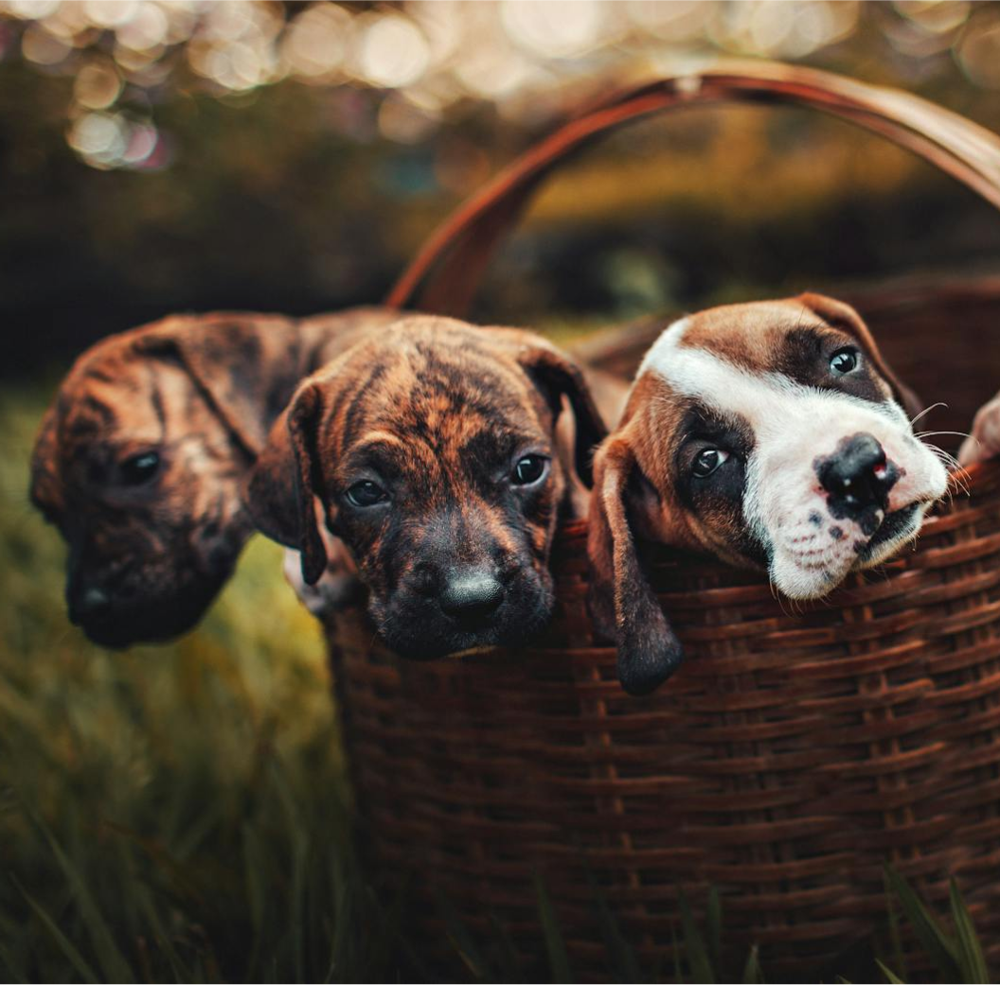
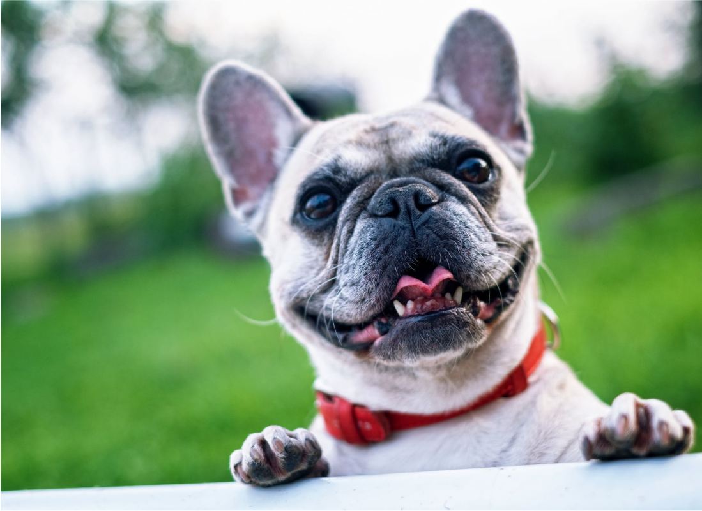

¡Todo sobre mascotas!
Consejos de expertos y una comunidad apasionada para ayudarte a cuidar y disfrutar cada momento con tu mascota.


¿Qué es Petus?
Petus es el programa en línea creado para los verdaderos amantes de las mascotas. Desde perros y gatos hasta animales exóticos, abordamos todo lo que necesitas saber para cuidar, entender y disfrutar de la compañía de tus compañeros de vida.